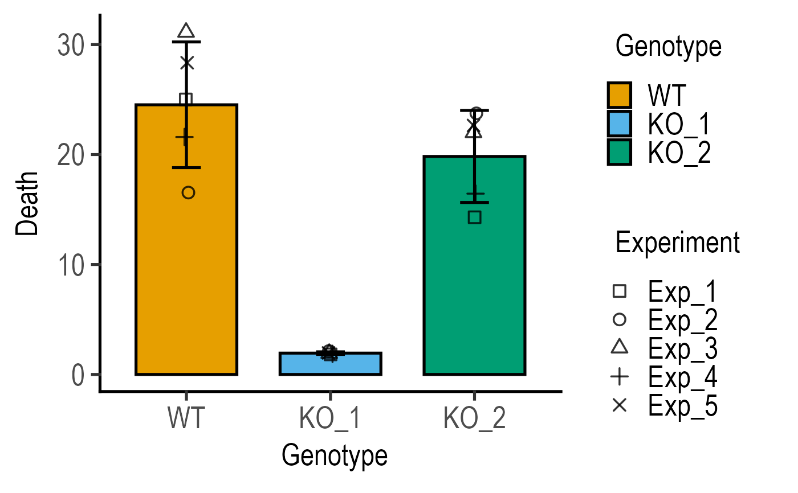

R/plot_3d_scatterbar.R
plot_3d_scatterbar.RdThe functions plot_3d_scatterbar, plot_3d_scatterbox and plot_4d_scatterbox allow 3d or 4d plots with 3 or 4 variables, respectively.
plot_3d_scatterbar( data, xcol, ycol, shapes, ewid = 0.2, symsize = 2, symthick = 1.5, fontsize = 20, alpha = 1, ColPal = "all_grafify", ColRev = F )
| data | a data table, e.g. data.frame or tibble. |
|---|---|
| xcol | name of the column with the categorical factor to be plotted on X axis. |
| ycol | name of the column with quantitative variable to plot on the Y axis. |
| shapes | name of the column with the second categorical factor, for example from a two-way ANOVA design. |
| ewid | width of error bars, default set to 0.2 |
| symsize | size of symbols, default set to 3 |
| symthick | size of outline of symbol lines ( |
| fontsize | parameter of |
| alpha | fractional opacity of boxes, default set to 1 (i.e. maximum opacity & zero transparency) |
| ColPal | grafify colour palette to apply, default "all_grafify"; alternatives: "okabe_ito", "bright", "pale", "vibrant", "contrast", "muted" "dark", "light". |
| ColRev | whether to reverse order of colour choice, default F (FALSE); can be set to T (TRUE) |
This function returns a ggplot2 object.
These functions take a data table, X and Y variables, and a grouping variable "shapes" in the case ofplot_3d_scatterbox and plot_3d_scatterbar, or two additional variables "boxes" and "dots" in plot_4d_scatterbox.
All three functions plot scatter plots with matched shapes (e.g. when you want to depict matched subjects or experiments). The grouping variable is useful to plot two-way factorial data or when there are more dimensions in the data table.
These functions call ggplot with geom_point and geom_bar (actually through stat_summary) or geom_boxplot geometries.
Bars depict means using stat_summary with geom = "bar", fun = "mean" , and scatter points are depicted using geom_point,
with position = position_jitterdodge(dodge.width = 0.8, jitter.width = 0.05), so dots are jittered and dodged along the X variable.
The X and "shapes" variables are mapped with group = interaction{ xcol, shapes}.
Scatterplot symbols are plotted via geom_point geometry, and in v0.2.1 are depicted in black.
In v0.2.1, "shapes" variable is mapped to the fill aesthetic of bars or boxes, and shape of symbols.
Boxplot geometry uses geom_boxplot with position = position_dodge(width = 0.9), width = 0.6.
In plot_4d_scatterbox, the third variable is mapped to the boxplot and 4th to shapes. Both variables could be entered as the same as well. Up to 25 levels can be mapped to "shapes".
All three functions can be expanded further, for example with facet_grid or facet_wrap.
#Basic usage plot_3d_scatterbar(data_cholesterol, Treatment, Cholesterol, Hospital)